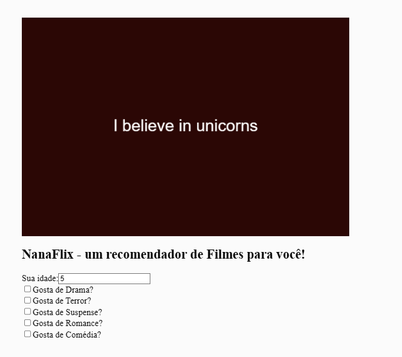
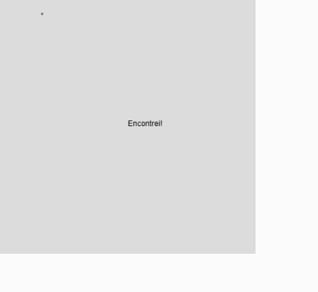
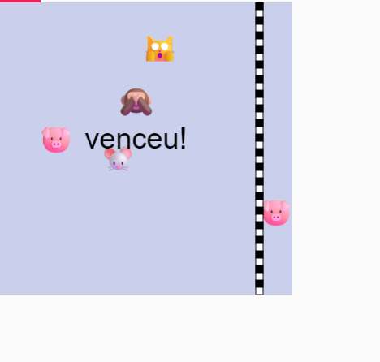

Meus projetos

Nanaflix: Um Recomendador de filmes
Este projeto é uma página web que recomenda alguns dos meus filmes favoritos, de acordo com a sua idade, e gosto. A página é feita com p5.js para uma visualização simples e usa fontes externas do Google Fonts.

Quente e Frio: Um jogo de esconde esconde!
Este projeto é um jogo interativo baseado em achar o ponto escondido atraves do movimento de seu mouse. Conforme a esfera diminui, mais perto do alvo vc esta!

Run!: Uma corrida Interativa entre um grupo de 4 pessoas
Este projeto p5js cria uma experiência interativa entre um grupo por uma corrida que acontece quando se clicam nas teclas a s d ou f.